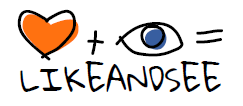
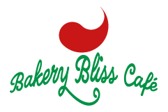

Projets {Graphiques}
← Retour à l'accueil
L'îlot câlins
L'îlot câlins est une association à but non lucratif dédiée à l'hospitalisation des enfants en état de critiques graves dans les pays en développement. Un projet difficile ou la charte graphique doit sensibiliser et passer un message fort.
Non terminé
ID visuelle
Site Web

LikeAndSee
La charte graphique de mon ancienne entreprise de création d'identité visuelle et de design graphiques.
Fermé
ID visuelle

Bakery Bliss Café
Un projet fictif fait dans le cadre d'un examen pour STUDI pour devenir designer graphique.
Fictif
ID visuelle
Figma
Site Web